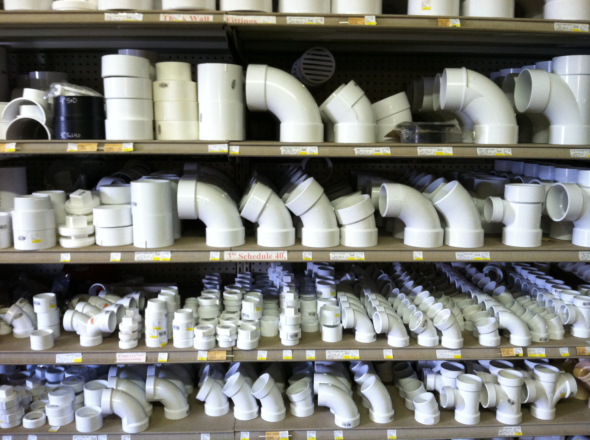

| Home | Services | Tips | Directions | Contact Us | Monthly Specials |
|---|
Handy Tips from a Helpful Hardware Store
How do I get engine parts or parts for my mower?
To get the correct engine part, we need the make and model of the engine with a description of the part. However, a part number is even better. Be careful to distinguish between the engine model and the mower model number, which we will need if we are looking up mower parts. If you need carburetor parts, we need the make of the carburetor which is usually either Zama or Walbro.What kind of water pipe do I have?
 There is a widely made mistake concerning plastic water pipe. Many people come into the store and say they need PVC pipe when what they really need is CPVC pipe. The CPVC pipe is by far the most common pipe in our area. In appearance, it is off-white, cream colored, or light yellow. It is measured across the outside diameter and is used for both hot and cold water. The other pipe is PVC pipe, which is pure white in appearance, measured across the inside diameter, and can withstand only cold water. PVC is slightly less expensive than CPVC so it is puzzling that most people have the more expensive CPVC in their cold water lines.How do I tell what size pipe I have?
There is a great deal of confusion in pipe sizing. This is understandable as there are two ways to measure pipe size. The first sizing system is called IPS (Iron Pipe Size) which is measured using the inside of the pipe, or the ID (inside diameter). This is the method used for measuring iron pipe, coil water pipe, coil gas pipe, PVC pipe, and refrigeration copper pipe.The other measuring system is CTS (Copper Tubing Size). Contrary to common belief, it has nothing to do with copper pipe. Instead, copper tubing is measured with this system. In CTS sizing, the pipe, or more correctly tubing, is measured on the outside of the tube or the OD (outside diameter). This is the method for measuring CPVC pipe, copper tubing, coil water pipe, and coil gas pipe.